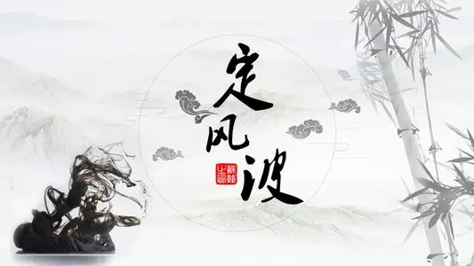

定风波·莫听穿林打叶声
三月七日，沙湖道中遇雨，雨具先去，同行皆狼狈，余独不觉。已而遂晴，故作此。
莫听穿林打叶声，何妨吟啸且徐行。竹杖芒鞋轻胜马，谁怕？一蓑烟雨任平生。
料峭春风吹酒醒，微冷，山头斜照却相迎。回首向来萧瑟处，归去，也无风雨也无晴。
莫听穿林打叶声，何妨吟啸且徐行。竹杖芒鞋轻胜马，谁怕？一蓑烟雨任平生。
料峭春风吹酒醒，微冷，山头斜照却相迎。回首向来萧瑟处，归去，也无风雨也无晴。
译文及注释
译文：
宋神宗元丰五年（1082）的三月七日，在沙湖道上赶上了下雨，拿着雨具的仆人先前离开了，同行的人都觉得很狼狈，只有我不这么觉得。过了一会儿天晴了，就做了这首词。
不用注意那穿林打叶的雨声，何妨放开喉咙吟咏长啸从容而行。拄竹杖、穿芒鞋，走得比骑马还轻便，一身蓑衣任凭风吹雨打，照样过我的一生
春风微凉吹醒我的酒意，微微有些冷，山头初晴的斜阳却应时相迎。回头望一眼走过来的风雨萧瑟的地方，我信步归去，不管它是风雨还是放晴。
不用注意那穿林打叶的雨声，何妨放开喉咙吟咏长啸从容而行。拄竹杖、穿芒鞋，走得比骑马还轻便，一身蓑衣任凭风吹雨打，照样过我的一生
春风微凉吹醒我的酒意，微微有些冷，山头初晴的斜阳却应时相迎。回头望一眼走过来的风雨萧瑟的地方，我信步归去，不管它是风雨还是放晴。
注释：
定风波：词牌名。
沙湖：在今湖北黄冈东南三十里，又名螺丝店。
狼狈：进退皆难的困顿窘迫之状。
已而：过了一会儿。
穿林打叶声：指大雨点透过树林打在树叶上的声音。
吟啸：吟咏长啸。
芒鞋：草鞋。
一蓑烟雨任平生：披着蓑衣在风雨里过一辈子也处之泰然。一蓑（suō）：蓑衣，用棕制成的雨披。
料峭：微寒的样子。
斜照：偏西的阳光。
向来：方才。萧瑟：风雨吹打树叶声。
也无风雨也无晴：意谓既不怕雨，也不喜晴。
沙湖：在今湖北黄冈东南三十里，又名螺丝店。
狼狈：进退皆难的困顿窘迫之状。
已而：过了一会儿。
穿林打叶声：指大雨点透过树林打在树叶上的声音。
吟啸：吟咏长啸。
芒鞋：草鞋。
一蓑烟雨任平生：披着蓑衣在风雨里过一辈子也处之泰然。一蓑（suō）：蓑衣，用棕制成的雨披。
料峭：微寒的样子。
斜照：偏西的阳光。
向来：方才。萧瑟：风雨吹打树叶声。
也无风雨也无晴：意谓既不怕雨，也不喜晴。
作品赏析
此词为醉归遇雨抒怀之作。词人借雨中潇洒徐行之举动，表现了虽处逆境屡遭挫折而不畏惧不颓丧的倔强性格和旷达胸怀。全词即景生情，语言诙谐。
首句“莫听穿林打叶声”，一方面渲染出雨骤风狂，另一方面又以“莫听”二字点明外物不足萦怀之意。“何妨吟啸且徐行”，是前一句的延伸。在雨中照常舒徐行步，呼应小序“同行皆狼狈，余独不觉”，又引出下文“谁怕”即不怕来。徐行而又吟啸，是加倍写；“何妨”二字透出一点俏皮，更增加挑战色彩。首两句是全篇枢纽，以下词情都是由此生发。
在雨中行走，按照生活常态，当然是骑马胜过竹杖芒鞋，但是苏轼却说：“竹杖芒鞋轻胜马，谁怕？”这里当然不是写实，而是继续写自己当时的心态。当自己拥有平静悠闲的心态时，即使是竹杖芒鞋行走在泥泞之中，也胜过骑马扬鞭疾驰而去。这里还隐含了两种生活的对比，一种是竹杖芒鞋的平民生活，一种是肥马轻裘的贵族生活。在历经了政治上的风风雨雨后，苏轼越来越认同这种真真切切、平平淡淡的平民生活。“竹杖”、“芒鞋”是苏轼用来表达平民生活的重要意象，在其诗词中经常使用，如《初入庐山》：“芒鞋青竹杖，自挂百钱游。”《东坡》：“莫嫌荦确坡头路，自爱铿然曳杖声。”《寓居定惠院》：“不问人家与僧舍，拄杖敲门看修竹。”尽管苏轼是一位士人和官员，但却是一个平民艺术家，常常深入民间，并过着平民般的生活。“竹杖芒鞋”就是苏东坡典型的平民形象，也是其平民人格的真实写照。
竹杖芒鞋行走在风雨中，本是一种艰辛的生活，而苏轼却走得那么潇洒、悠闲。对于这种生活，他进一步激励自己：“谁怕？”意思是说，我不怕这种艰辛和磨难。这是一句反问句，意在强调这种生活态度。为什么要强调这种生活态度呢？因为对于苏轼，这就是他一生的生活态度，所以他说：“一蓑烟雨任平生”。“一蓑烟雨”，是说整个蓑衣都在烟雨中，实际上是说他的全身都在风吹雨打之中。这“一蓑烟雨”也象征人生的风雨、政治的风雨。而“任平生”，是说一生任凭风吹雨打，而始终那样的从容、镇定、达观。这一句简直就是苏轼一生生活的写照。他在政治上不断地受到打击，一贬再贬，晚年最后流放到了蛮荒之地海南岛。但是在精神上，他始终没有被打败，始终保持一颗鲜活灵动的心。当他被贬到海南岛，仍能够写出“云散月明谁点缀，天容海色本澄清”这样心灵纯净的句子。对于“一蓑烟雨”这样的意象，苏轼是非常喜爱的。他对唐代词人张志和的词《渔父》中“青箬笠，绿蓑衣，斜风细雨不须归”这样的句子极为赞赏，恨其曲调不传，并将其改为《浣溪沙》中句子（“自庇一身轻箬笠，相随到处绿蓑衣”）入歌。
我们再看词的下阕，下阕转到写雨后的情景和感受。“料峭春风吹酒醒，微冷，山头斜照却相迎。”这里描绘了一个有趣而又充满哲理的画面：一边是料峭春风，作者感到丝丝的冷意；一边是山头斜照，作者感到些些的暖意。这既是写景，也是表达人生的哲理。人生不就是这样充满辩证法吗？在寒冷中有温暖，在逆境中有希望，在忧患中有喜悦。当你对人生的这种辩证法有了了悟之后，就不会永远沉陷在悲苦和挫折之中，就会在微冷的醒觉中升起一股暖意、一线希望。“山头斜照却相迎”，是对生活的一种积极观照，是一种通观，是苏轼经历磨难和打击之后，在灵魂上的升华。苏轼在他的另两句诗中，也表达这种思想：“参横斗转欲三更，苦雨终风也解晴。”意谓凄风苦雨之后也终会放晴的。
其实以上三句表达的还只是一种儒家的境界，这是一种入世的人生态度。在此基础上，苏轼进一步彻悟人生：“回首向来萧瑟处，归去，也无风雨也无晴。”归去之后，看刚才刮风下雨的地方，哪里有什么雨，哪里有什么晴。所谓风雨，所谓晴，不过是人心中的幻象而已。这里苏轼进入到了佛教所说的“无差别境界”。在佛教看来，“万法惟心所现”，世界的一切物象皆是心所幻化而出的。如果心静，世界自然清静。其实世界万物并没有什么区别，只是我们有了分别心才有了世界万象。如果我们内心进入到了无差别的境界，世界万物哪有什么分别呢？因此佛教劝人“无执”，一切都不要执着，不要被外物所系缚。成功也好，失败也好，都不要太在乎，所谓“宠辱不惊”。苏轼在这里表达的正是这样一种哲理，归去之后（可理解心灵的皈依），心灵进入了宁静的境界，再看生活中的风雨或阳光，哪有什么区别呢？都微不足道。他在此劝人既不要因风雨而担惊受怕，也不要因阳光而欣喜若狂，一切都泰然处之。这看来似乎有些唯心的色彩了，其实这是一种人生的大境界，是一种了悟宇宙、人生之后的大超越。这也反映出了苏轼的人格境界，应该说苏轼的一生基本上达到了这一境界。晚年他流放到海南岛后，又把这三句稍一改，写入了另一首诗《独觉》：“潇然独觉午窗明，欲觉犹闻醉鼾声。回首向来萧瑟处，也无风雨也无晴。”可见，苏轼是以此来磨砺自己的人格境界，并贯穿在他一生的生命历程之中。全词以这样充满哲理的句子收尾，韵味无穷，令人深思。
首句“莫听穿林打叶声”，一方面渲染出雨骤风狂，另一方面又以“莫听”二字点明外物不足萦怀之意。“何妨吟啸且徐行”，是前一句的延伸。在雨中照常舒徐行步，呼应小序“同行皆狼狈，余独不觉”，又引出下文“谁怕”即不怕来。徐行而又吟啸，是加倍写；“何妨”二字透出一点俏皮，更增加挑战色彩。首两句是全篇枢纽，以下词情都是由此生发。
在雨中行走，按照生活常态，当然是骑马胜过竹杖芒鞋，但是苏轼却说：“竹杖芒鞋轻胜马，谁怕？”这里当然不是写实，而是继续写自己当时的心态。当自己拥有平静悠闲的心态时，即使是竹杖芒鞋行走在泥泞之中，也胜过骑马扬鞭疾驰而去。这里还隐含了两种生活的对比，一种是竹杖芒鞋的平民生活，一种是肥马轻裘的贵族生活。在历经了政治上的风风雨雨后，苏轼越来越认同这种真真切切、平平淡淡的平民生活。“竹杖”、“芒鞋”是苏轼用来表达平民生活的重要意象，在其诗词中经常使用，如《初入庐山》：“芒鞋青竹杖，自挂百钱游。”《东坡》：“莫嫌荦确坡头路，自爱铿然曳杖声。”《寓居定惠院》：“不问人家与僧舍，拄杖敲门看修竹。”尽管苏轼是一位士人和官员，但却是一个平民艺术家，常常深入民间，并过着平民般的生活。“竹杖芒鞋”就是苏东坡典型的平民形象，也是其平民人格的真实写照。
竹杖芒鞋行走在风雨中，本是一种艰辛的生活，而苏轼却走得那么潇洒、悠闲。对于这种生活，他进一步激励自己：“谁怕？”意思是说，我不怕这种艰辛和磨难。这是一句反问句，意在强调这种生活态度。为什么要强调这种生活态度呢？因为对于苏轼，这就是他一生的生活态度，所以他说：“一蓑烟雨任平生”。“一蓑烟雨”，是说整个蓑衣都在烟雨中，实际上是说他的全身都在风吹雨打之中。这“一蓑烟雨”也象征人生的风雨、政治的风雨。而“任平生”，是说一生任凭风吹雨打，而始终那样的从容、镇定、达观。这一句简直就是苏轼一生生活的写照。他在政治上不断地受到打击，一贬再贬，晚年最后流放到了蛮荒之地海南岛。但是在精神上，他始终没有被打败，始终保持一颗鲜活灵动的心。当他被贬到海南岛，仍能够写出“云散月明谁点缀，天容海色本澄清”这样心灵纯净的句子。对于“一蓑烟雨”这样的意象，苏轼是非常喜爱的。他对唐代词人张志和的词《渔父》中“青箬笠，绿蓑衣，斜风细雨不须归”这样的句子极为赞赏，恨其曲调不传，并将其改为《浣溪沙》中句子（“自庇一身轻箬笠，相随到处绿蓑衣”）入歌。
我们再看词的下阕，下阕转到写雨后的情景和感受。“料峭春风吹酒醒，微冷，山头斜照却相迎。”这里描绘了一个有趣而又充满哲理的画面：一边是料峭春风，作者感到丝丝的冷意；一边是山头斜照，作者感到些些的暖意。这既是写景，也是表达人生的哲理。人生不就是这样充满辩证法吗？在寒冷中有温暖，在逆境中有希望，在忧患中有喜悦。当你对人生的这种辩证法有了了悟之后，就不会永远沉陷在悲苦和挫折之中，就会在微冷的醒觉中升起一股暖意、一线希望。“山头斜照却相迎”，是对生活的一种积极观照，是一种通观，是苏轼经历磨难和打击之后，在灵魂上的升华。苏轼在他的另两句诗中，也表达这种思想：“参横斗转欲三更，苦雨终风也解晴。”意谓凄风苦雨之后也终会放晴的。
其实以上三句表达的还只是一种儒家的境界，这是一种入世的人生态度。在此基础上，苏轼进一步彻悟人生：“回首向来萧瑟处，归去，也无风雨也无晴。”归去之后，看刚才刮风下雨的地方，哪里有什么雨，哪里有什么晴。所谓风雨，所谓晴，不过是人心中的幻象而已。这里苏轼进入到了佛教所说的“无差别境界”。在佛教看来，“万法惟心所现”，世界的一切物象皆是心所幻化而出的。如果心静，世界自然清静。其实世界万物并没有什么区别，只是我们有了分别心才有了世界万象。如果我们内心进入到了无差别的境界，世界万物哪有什么分别呢？因此佛教劝人“无执”，一切都不要执着，不要被外物所系缚。成功也好，失败也好，都不要太在乎，所谓“宠辱不惊”。苏轼在这里表达的正是这样一种哲理，归去之后（可理解心灵的皈依），心灵进入了宁静的境界，再看生活中的风雨或阳光，哪有什么区别呢？都微不足道。他在此劝人既不要因风雨而担惊受怕，也不要因阳光而欣喜若狂，一切都泰然处之。这看来似乎有些唯心的色彩了，其实这是一种人生的大境界，是一种了悟宇宙、人生之后的大超越。这也反映出了苏轼的人格境界，应该说苏轼的一生基本上达到了这一境界。晚年他流放到海南岛后，又把这三句稍一改，写入了另一首诗《独觉》：“潇然独觉午窗明，欲觉犹闻醉鼾声。回首向来萧瑟处，也无风雨也无晴。”可见，苏轼是以此来磨砺自己的人格境界，并贯穿在他一生的生命历程之中。全词以这样充满哲理的句子收尾，韵味无穷，令人深思。
创作背景
这首记事抒怀之词作于宋神宗元丰五年（公元1082年）春，当时是苏轼因“乌台诗案”被贬为黄州团练副使的第三个春天。词人与朋友春日出游突遇风雨，词人却毫不在乎，泰然处之，吟咏自若，缓步而行。